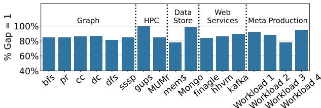
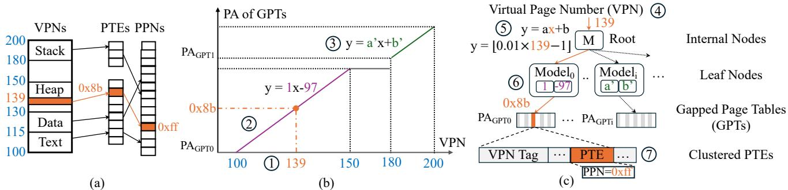
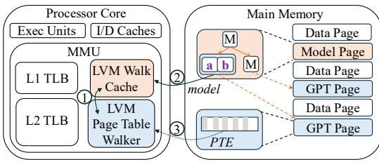
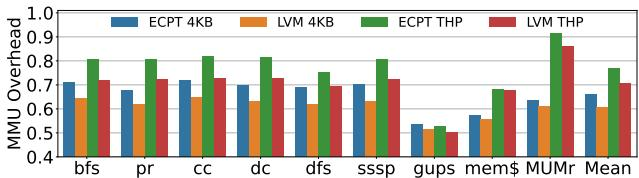

Learning to Walk: Architecting Learned Virtual Memory Translation 论文解析¶
0. 论文基本信息¶
作者 (Authors)
- Kaiyang Zhao
- Yuang Chen
- Xenia Xu
- Dan Schatzberg
- Nastaran Hajinaza
- Rupin Vakharwala
- Andy Anderson
- Dimitrios Skarlatos
发表期刊/会议 (Journal/Conference)
- 58th IEEE/ACM International Symposium on Microarchitecture (MICRO '25)
发表年份 (Publication Year)
- 2025
1. 摘要¶
目的
- 解决现代数据中心应用中，由 radix page tables 引起的虚拟内存地址转换性能瓶颈问题。该瓶颈源于其多级页表结构导致的长达 5 次串行内存访问 的页表遍历（page walk）。
- 设计一种新型页表结构，能够实现接近理想的 单次内存访问 完成地址转换，同时克服现有方案（如 hashed page tables）的并行访问开销和物理内存连续性要求高等缺点。
方法
- 提出 Learned Virtual Memory (LVM)，一种基于 learned index 的页表结构。
- LVM 的核心创新在于用一个为虚拟内存定制的、轻量级的 learned index 替代传统哈希函数或固定树形结构。
- 该 learned index 的关键设计包括：
- 利用虚拟地址空间的规律性: 通过分析发现，应用程序的虚拟地址空间具有高度规律性（gap=1 的覆盖率最低为 78%），非常适合用简单模型学习。

Figure 1:Address translations schemes.LVMavoids both the long sequential page walks of radix page tables and the high collision rates and parallel accesses of hashed page tables.
- 引入面向虚拟内存的成本模型 (Cost Model): 该模型在 index 深度、宽度 和 碰撞率 之间进行权衡，以生成一个极小且高缓存命中率的索引结构。

- 采用 Gapped Page Tables (GPTs): 叶节点关联独立的 GPT，放松了对大块物理内存连续性的要求，能适应数据中心常见的碎片化环境。

Figure 3: Median percentage of free memory in a Meta's datacenter that can be allocated contiguously at various sizes.
- 支持高效动态插入: 通过 minimum insertion distance 和 rescaling 技术，避免了昂贵的模型重训练。

Figure 5: LVM out of bounds inserts close to the edge.
- 统一支持多页大小: 利用线性模型的不同斜率在同一索引结构中表示不同大小的页面（如 4KB, 2MB, 1GB）。

Figure 6: Regular and huge pages as represented by LVM.
- 使用定点数运算: 确保硬件实现的高效性，避免浮点运算开销。
结果
- 在 Linux OS 扩展、RTL 综合和全系统仿真中对 LVM 进行了全面评估。
- 性能提升:
- 相比 radix page tables，平均减少 44% 的地址转换开销。
- 应用程序执行时间获得 2%-27% 的加速。
- 性能表现与理想页表（Ideal page table）相差在 1% 以内。
- 硬件效率:
- LVM Walk Cache (LWC) 面积比 radix 的 PWC 减少 1.5 倍。
- RTL 实现显示，LVM 的硬件结构在面积、功耗上均优于 radix。
- 架构特性:
- 碰撞率极低：4KB 页面下平均仅 0.2%。
- 索引尺寸极小：稳态下平均仅需 162 字节，且不随应用内存占用增长而线性增长。
- OS 管理开销可忽略：平均仅占总执行时间的 1.17%。
- 对比其他方案:
- 显著优于 Elastic Cuckoo Page Tables (ECPT)，不仅性能更高，而且内存流量大幅降低（ECPT 的页表遍历流量是 radix 的 1.7-2.1 倍，而 LVM 则大幅减少）。
- 优于 ASAP, Midgard, 和 Flattened Page Tables (FPT) 等先前工作。
| 方案 | 相比 Radix 4KB 的平均加速 | 页表遍历流量 (vs Radix 4KB) | 索引/缓存面积 |
|---|---|---|---|
| LVM | 14% | -43% | -1.5x |
| ECPT | 9% | +70% | - |
| ASAP | -3% | + | - |
| Midgard | 3% | - | - |
结论
- Learned Virtual Memory (LVM) 成功地将 learned indexes 的理念应用于虚拟内存地址翻译这一硬件关键路径。
- 通过一系列针对虚拟内存特性的创新设计（成本模型、Gapped Page Tables、高效更新、多页大小支持等），LVM 克服了传统 learned indexes 在硬件场景下面临的模型过大、更新困难、依赖连续内存等核心挑战。
- LVM 能够提供接近理论最优的 单次访问地址翻译 性能，显著优于当前主流的 radix 和 hashed page tables，并且硬件开销更低，是一种面向未来大规模内存系统的、实用且高效的页表设计方案。
2. 背景知识与核心贡献¶
研究背景与动机
- 虚拟内存地址翻译已成为数据中心性能瓶颈。随着内存密集型应用的普及和内存容量（如通过 CXL 技术达到 TB 级）的激增，传统的 radix page tables（多级页表）因其需要多达 5 次串行内存访问（page walk）而带来巨大开销。
- 行业报告显示，在 Google 和 Meta 的生产环境中，约 20% 的 CPU 周期被消耗在 page walk 上。
- 现有优化方案存在明显缺陷：
- 基于大页（huge pages）或内存连续性的方法依赖于物理内存的连续分配，这在高度碎片化的现代数据中心中是稀缺资源。
- 哈希页表（Hashed Page Tables, HPTs），如 Elastic Cuckoo Page Tables (ECPT)，虽能并行化访问，但无法消除多次内存访问的本质，反而因并行探测（如 3-way cuckoo hashing）导致内存流量增加和缓存污染。
- 传统 Learned Indexes 虽在数据库领域取得成功，但其为软件设计，存在模型过大（数十MB）、依赖浮点运算、需要大块物理连续内存、难以高效支持动态插入等问题，完全不适用于对延迟和硬件实现有严苛要求的 MMU 地址翻译场景。
Figure 1:Address translations schemes.LVMavoids both the long sequential page walks of radix page tables and the high collision rates and parallel accesses of hashed page tables.
核心贡献
论文提出了 Learned Virtual Memory (LVM)，一种专为硬件地址翻译设计的新型页表结构，旨在实现高效的单次内存访问翻译。其核心贡献包括：
- 验证了虚拟地址空间的规律性：通过对多样化的真实应用（包括 Meta 生产负载）进行分析，发现其虚拟页号（VPN）分布具有高度规律性（至少 78% 的 gap=1，即连续分配），这为使用 Learned Index 提供了理论基础。

Figure 2: Virtual memory gap coverage of gap = 1.
-
设计了面向虚拟内存的轻量级 Learned Index：
- 采用简单的线性模型（
y = ax + b）作为基础构建块，仅需存储斜率和截距，模型极小（平均 162 字节），易于缓存。 - 引入定制化的成本模型，在模型深度、宽度和碰撞率之间进行权衡，确保翻译路径短且高效。
- 使用定点数算术替代浮点运算，便于硬件实现。
- 通过Gapped Page Tables (GPTs) 组织叶节点数据，并结合创新的重缩放（rescaling） 和最小插入距离技术，高效支持动态插入，避免了昂贵的全局重训练。
- 采用简单的线性模型（
-
解决了物理内存碎片化问题：LVM 不要求大块物理连续内存。它能根据系统当前可用的物理连续性（研究发现数百 KB 的连续块依然丰富），动态创建多个小型 GPT，从而适应高度碎片化的环境。
Figure 3: Median percentage of free memory in a Meta's datacenter that can be allocated contiguously at various sizes.
-
无缝支持多页大小：LVM 在单一 Learned Index 结构内，通过不同斜率的线性模型来表示不同大小的页面（如 4KB, 2MB, 1GB），无需为每种页大小维护独立的数据结构。
-
完整的软硬件协同设计：提供了 Linux 内核原型、RTL 硬件实现和全系统模拟评估。结果表明，LVM 相比 radix 页表，平均减少 44% 的地址翻译开销，应用执行时间提升 2-27%，性能接近理想单次访问页表（差距在 1% 以内），同时将页表遍历缓存（PWC）面积需求减少了 1.5 倍。
3. 核心技术和实现细节¶
0. 技术架构概览¶
整体架构概览
Learned Virtual Memory (LVM) 的核心目标是通过一个单次内存访问即可完成地址翻译，从而取代传统的多级 radix page tables。其整体架构围绕一个为虚拟内存系统量身定制的 learned index 展开，并由操作系统和硬件协同管理。
- LVM 的基本思想是用一个学习得到的函数（learned function）替代 hashed page tables 中的固定哈希函数，该函数能够根据应用虚拟地址空间（Virtual Address Space）的结构规律，直接预测出页表项（PTE）的物理位置。
- 整个系统由两部分组成：OS 软件部分负责构建、训练和动态维护 learned index 与底层数据结构；硬件 MMU 部分则在 TLB miss 时，利用该 index 执行高效的地址翻译。

Figure 4: LVM learns the distribution of virtual addresses and maps them to page tables
核心组件与数据结构
LVM 的架构主要包含两个核心组件：Learned Index 和 Gapped Page Tables (GPTs)。
-
Learned Index
- 组织为一个层次化模型（hierarchy of models），包含内部节点（internal nodes）和叶节点（leaf nodes）。
- 内部节点：负责将整个虚拟地址空间（VPN）划分为更小的子集，并通过一个简单的线性模型
y = ax + b将输入的 VPN 映射到其子节点的索引。 - 叶节点：负责最终的映射，其线性模型将 VPN 直接映射到其对应 PTE 在 Gapped Page Table 中的物理地址。
- 所有模型参数（斜率
a和截距b）均使用定点数（fixed-point arithmetic）表示，以满足硬件快速计算的要求，每个模型仅占用 16 字节。 - 该索引的深度和宽度由一个成本模型（cost model）动态决定，该模型在预测精度、索引深度/宽度和缓存效率之间进行权衡，确保索引结构精简且高效。
-
Gapped Page Tables (GPTs)
- 每个叶节点都关联一个独立的 GPT，用于存储实际的 PTE。
- GPT 是一个带有空隙（gaps）的数组，这些空隙为未来的插入操作预留了空间，从而支持高效的动态更新。
- 关键设计：GPT 不要求大块物理连续内存。LVM 会根据系统当前可用的物理内存碎片情况（通常为几百 KB 级别），动态分配多个小的、非连续的 GPT。叶节点的模型在训练时会直接学习 PTE 的绝对物理地址，而非相对偏移量。
硬件支持架构
LVM 对硬件的改动被严格限制在 MMU 内部，保持了与现有系统的兼容性。
- LVM Page Table Walker：替换了传统的页表遍历器。它包含一个加法器和一个乘法器，用于计算 learned index 中线性模型的输出。
- LVM Walk Cache (LWC)：替换了传统的 Page Walk Cache (PWC)。它是一个全相联缓存，专门用于缓存 learned index 中的模型节点（slope 和 intercept）。
- LWC 条目还包含地址空间标识符（ASID），以支持高效的上下文切换。
- 由于 learned index 本身非常小（平均仅 162 字节），LVM 的 LWC 面积比 radix PWC 小 1.5 倍，并且能实现 >99% 的命中率。
- 其他 MMU 组件（如 L1/L2 TLB）和处理器缓存层次结构保持不变。

Figure 7: LVM hardware overview.
关键特性支持机制
-
高效动态插入（Efficient Insertion）
- 边界外插入（Out-of-bounds inserts）：利用应用倾向于连续扩展地址空间的特性，LVM 通过预分配最小插入距离（minimum insertion distance）和重缩放（rescaling）技术，在不重新训练模型的情况下处理新页面。
- 边界内插入（Within-bounds inserts）：利用 GPT 中的空隙直接插入；若发生冲突，则仅对局部叶节点进行轻量级重训练。
-
多页大小支持（Multiple Page Sizes）
- LVM 在单一 learned index 中无缝支持 4KB、2MB、1GB 等多种页大小。
- 其原理是利用不同页大小在累积分布函数（CDF）上表现为不同斜率的线性段。大页（如 2MB）对应更平缓的斜率，因为其覆盖的 VPN 范围更广但只产生一个 PTE。
- PTE 本身包含2 位元数据来编码其页大小。

1. 基于成本模型的分层线性学习索引¶
LVM学习索引的核心架构与成本模型
- LVM的学习索引是一个分层的模型结构，旨在替代传统页表（如radix或hashed page tables）以实现高效的单次访问地址翻译。
- 该索引的核心构建单元是线性模型（linear model），形式为
y = ax + b。每个节点（无论是内部节点还是叶节点）仅需存储斜率a和截距b两个参数。 - 索引被组织成树状层次结构：
- 内部节点（internal nodes）：负责将整个虚拟地址空间（VPN key space）划分为更小的子集，并将查询路由到正确的子节点。其输出
y是一个子节点的索引。 - 叶节点（leaf nodes）：负责最终的映射，其输出
y是页表项（PTE）在间隙页表（Gapped Page Table, GPT）中的物理地址。
- 内部节点（internal nodes）：负责将整个虚拟地址空间（VPN key space）划分为更小的子集，并将查询路由到正确的子节点。其输出
- 整个索引的目标是学习虚拟页号（VPN）到其对应PTE物理地址的映射函数，利用了应用虚拟地址空间高度规则（regular）的特性。
Figure 4: LVM learns the distribution of virtual addresses and maps them to page tables
成本模型（Cost Model）
- 成本模型是LVM设计的核心创新，用于在索引的深度（depth）、宽度（分支因子，branching factor）和碰撞率（collision rate）之间进行权衡，以优化整体翻译延迟和硬件缓存效率。
- 该模型定义了一个翻译成本函数
C(n)，用于评估一个拥有n个子节点的节点的优劣。成本函数综合考虑了以下因素：- 索引深度（d）：更深的索引意味着更多的间接访问，增加延迟。
- 索引大小（s）：更大的索引占用更多内存，降低在**LVM Walk Cache **(LWC) 中的缓存效率。
- 碰撞率（cr）：更高的碰撞率会导致额外的内存访问来解决冲突。
- 每次碰撞的平均额外访问次数（ma）。
- 成本函数的具体形式为加权和，通过调整权重
x1,x2,x3来反映不同因素的重要性。论文中经验性地设置为x1 = 10,x2 = 5,x3 = 200，表明对碰撞解决成本的惩罚最高。
- 训练流程中的应用：
- 在训练一个节点时，成本模型首先估算该节点key space的复杂度（通过计算样条点（spline points）的数量）。
- 模型围绕这个估算值（±2范围内）尝试不同的子节点数量
n。 - 对每个候选的
n，计算其成本C(n)。 - 选择成本最低的
n作为该节点的最终分支因子，并据此划分key space给子节点。
- 硬性约束：
- 深度限制（d_limit）：为了防止索引过深，LVM设置了硬性深度上限（论文中设为
d_limit = 3），确保硬件页表遍历器能在有限步数内完成查找。 - 覆盖率约束：模型会检查一个节点是否提供了足够的“每字节覆盖范围”。如果一个节点过于“稀疏”（即用很多字节只覆盖了很小的地址空间），则不会为其创建子节点，以保证索引的空间效率和缓存友好性。
- 深度限制（d_limit）：为了防止索引过深，LVM设置了硬性深度上限（论文中设为
输入输出关系及在LVM中的作用
- 输入：待翻译的虚拟页号（VPN）。
- 处理流程：
- 从根节点开始，将VPN输入到根节点的线性模型中。
- 模型输出一个子节点索引，根据此索引选择下一个要访问的内部节点。
- 重复步骤2，直到到达一个叶节点。
- 将VPN输入到叶节点的线性模型中，模型直接输出目标PTE所在的物理地址。
- 硬件从该物理地址加载PTE，并进行标签匹配验证。
- 输出：目标页表项（PTE）的物理地址。
- 在整体系统中的作用：
- 替代传统页表遍历：将原本需要多次内存访问（radix）或多次并行访问（hashed）的页表遍历过程，简化为一次（或极少数几次）沿着学习索引的模型计算和一次PTE内存访问。
- 实现单次访问翻译：在绝大多数情况下（论文称99.4%），LVM能实现真正的单次内存访问完成地址翻译，性能接近理想页表（Ideal page table）。
- 硬件友好：线性模型仅需简单的定点乘加运算（fixed-point arithmetic），易于在硬件MMU中实现，且模型本身非常小巧（平均仅162字节），能被高效地缓存在**LVM Walk Cache **(LWC)中。
关键参数与性能指标总结
| 参数/指标 | 值/描述 | 说明 |
|---|---|---|
| 模型类型 | 线性模型 (y = ax + b) |
简单、高效、可解释性强 |
| 成本模型权重 | x1=10, x2=5, x3=200 |
高度惩罚碰撞解决成本 |
| **深度限制 **(d_limit) | 3 | 保证硬件遍历效率 |
| **间隙数组缩放因子 **(ga_scale) | 1.3 | 为未来插入预留空间 |
| 平均索引大小 | 162 bytes (THP) | 极小，缓存效率极高 |
| 平均碰撞率 | 0.6% (THP) | 远低于传统哈希表 (~19%) |
| 单次访问成功率 | 99.4% | 性能接近理想页表 |
| LWC命中率 | >99% | 得益于极小的索引尺寸 |
2. 支持高效插入的间隙页表 (Gapped Page Tables, GPTs)¶
间隙页表 (Gapped Page Tables, GPTs) 的设计原理与实现
LVM 采用 间隙页表 (Gapped Page Tables, GPTs) 作为其叶节点模型映射的目标存储结构，这是支持高效动态插入的核心机制。GPTs 通过在物理存储布局上预留空槽，并结合创新的软件管理策略，有效避免了传统 learned indexes 在面对动态数据时所需的昂贵重训练开销。
- 基本概念：每个 LVM 叶节点都关联一个独立的 GPT。该表在逻辑上是一个数组，但物理上被组织为一个 gapped array，即在初始化时就预分配了比当前所需更多的空间，这些未使用的空间被称为 gaps（间隙/空槽）。
- 核心目的：这些 gaps 为未来的 insertions（插入）操作提供了缓冲区，使得新加入的虚拟页号 (VPN) 可以直接放入由叶节点模型预测的位置或其附近，而无需立即修改模型本身。
- 物理内存适应性：GPTs 的设计巧妙地解决了数据中心中 physical memory fragmentation（物理内存碎片化）的问题。如图
Figure 3: Median percentage of free memory in a Meta's datacenter that can be allocated contiguously at various sizes.
所示，虽然数百 MB 的连续物理内存极为稀缺，但数百 KB 级别的连续块仍然普遍存在。因此，LVM 为每个叶节点分配独立的、较小的 GPT，而非一个巨大的连续页表，从而能灵活地利用系统中可用的物理内存碎片。
支持高效插入的关键技术
LVM 区分了两种主要的插入场景，并采用了不同的优化策略来处理，确保绝大多数插入操作都能在不触发模型重训练的情况下完成。
- 边界外插入 (Out-of-bounds inserts)：
- 场景假设：应用程序倾向于以 contiguous（连续）的方式扩展其虚拟地址空间，因此新页面通常会分配在现有地址空间的边缘附近。
- 最小插入距离 (Minimum Insertion Distance)：当发生一次靠近边界的插入时，LVM 不会只为这一个新页面分配空间，而是会一次性将地址空间向该方向扩展一个预设的 minimum insertion distance（默认为 64MB）。这种批处理方式可以吸收后续可能发生的邻近插入，摊销管理开销。
- 叶节点重缩放 (Rescaling)：在扩展地址空间后，LVM 会相应地 expand the gapped page table（扩展间隙页表），增加新的空槽。关键在于，existing linear model is not modified（现有线性模型不被修改）。新旧 VPN 都使用同一个模型进行位置预测，新 VPN 被直接插入到扩展后的新区域中。这一过程完全避免了重训练。
- 流程示例：如图
Figure 5: LVM out of bounds inserts close to the edge.
所示，当插入 VPN 1030 时，系统先将键范围扩展至 1050，然后按比例（ga_scale=1.3）扩展 GPT，并将新键插入到由原模型预测的位置。
- 边界内插入 (Within-bounds inserts) 与远端边界外插入：
- 常规处理：对于落在现有键范围内的插入，LVM 直接查询叶节点模型，并尝试将新条目放入预测位置。得益于 GPT 中的 gaps，大多数情况下该位置是空的，插入可立即完成。
- 冲突处理：如果预测位置已被占用（发生碰撞），LVM 会执行一次 local retraining（局部重训练），仅针对该叶节点重新拟合线性模型，以容纳新键。这是一个轻量级操作。
- 极端情况：只有在局部重训练也无法成功（极其罕见）时，LVM 才会考虑重建父节点甚至整个索引。根据评估，这种情况在整个应用生命周期中平均只发生 2次，最坏情况下也仅有 3次。
参数设置与输入输出关系
GPTs 的行为由几个关键参数控制，这些参数定义了其与 learned index 模型的交互方式。
- 核心参数：
ga_scale(Gapped Array Scale Factor): 默认值为 1.3。该因子决定了在构建 GPT 时，为每个现有 VPN 预留多少额外的空槽。例如，若有 N 个 VPN，则分配N * ga_scale个槽位。minimum insertion distance: 默认值为 64MB，用于批处理边界扩展。
- 输入输出关系：
- 输入: 叶节点模型接收一个 Virtual Page Number (VPN) 作为输入。
- 模型计算: 模型执行一个简单的线性函数
y = a*x + b，其中x是 VPN。 - 输出: 输出
y并非一个相对索引，而是经过特殊处理的 Physical Address (PA)。具体来说，在训练阶段，模型学习的目标是(PTE's index in GPT) + (Base Physical Address of the GPT)。因此，模型的直接输出就是 PTE 在物理内存中的 absolute location（绝对位置），硬件页表遍历器可以直接用此地址去访存。
- 在整体架构中的作用：GPTs 作为 learned index 的“叶子”，承担了最终的 PTE 存储功能。它们将 learned index 的预测能力与物理内存的实际布局解耦，使得 LVM 能够在保持模型简洁（仅需存储斜率和截距）的同时，灵活应对动态变化的虚拟地址空间和受限的物理内存条件，最终实现了接近 single-access address translation（单次访问地址翻译）的理想性能。
3. 自适应物理内存碎片的分配策略¶
自适应物理内存碎片的分配策略
LVM 的核心创新之一在于其能够有效应对现代数据中心中普遍存在的物理内存碎片化问题。传统数据结构（如大型哈希表或某些学习型索引）通常要求大块（数百MB级别）的physically contiguous memory，这在生产环境中已被证明是infeasible。LVM 通过一种巧妙的设计，将对物理连续性的需求降低到系统中依然丰富的hundreds of KB级别。
- 设计动机与观察
- 研究（如论文[95]及本文图3）表明，在Meta等公司的生产数据中心，数百兆字节 (hundreds of MBs) 级别的物理连续内存区域几乎不存在。
Figure 3: Median percentage of free memory in a Meta's datacenter that can be allocated contiguously at various sizes.
-
然而，数百千字节 (hundreds of KBs) 级别的小块连续内存仍然广泛可用，即使在高度碎片化的服务器上也是如此。
-
因此，LVM 的设计目标是将内存分配需求适配到这个可行的粒度上。
-
核心机制：Per-Leaf-Node Gapped Page Tables (GPTs)
- LVM 的学习型索引的每个leaf node都关联一个独立的gapped page table (GPT)。
- 这些 GPT 是小型的、概念上为数组的页表条目（PTEs）集合。
- 关键点在于，不同的 leaf node 的 GPT 可以被分配在物理地址空间中完全不相邻的位置。这从根本上解耦了逻辑上的页表结构与物理内存布局的连续性要求。
-
算法流程与实现细节
- Leaf Node 训练阶段:
- 当一个 leaf node 需要被创建或重建时，LVM 会向操作系统内存分配器（如 Linux 的 buddy allocator）查询当前可用的最大物理连续块大小。
- 基于查询到的available contiguity，LVM 动态决定该 leaf node 所需覆盖的虚拟地址范围以及其 GPT 的大小。
- 如果可用的连续块较小，LVM 会选择创建更多的 leaf nodes，每个负责更小的虚拟地址子空间，从而确保每个 GPT 都能放入一个小的连续物理块中。
- 模型学习与地址映射:
- 在训练 leaf node 的线性模型
y = ax + b时，其输出y并非简单的 PTE 在本地 GPT 中的索引。 - 相反，
y被直接训练为 PTE 的最终物理地址 (physical address)。 - 这是通过在训练时将 GPT 的base physical address 加到 PTE 的本地索引上来实现的。即，模型学习的是
(VPN, PA_of_PTE)的映射关系。 - 因此，硬件在执行页表遍历时，leaf node 模型的输出可以直接用于访存，无需额外的基地址加法操作。
- 在训练 leaf node 的线性模型
- Leaf Node 训练阶段:
-
参数设置与动态适应
- Gapped Array Scale Factor (
ga_scale): 论文中设定为 1.3。这意味着在分配 GPT 时，会预留 30% 的额外空间（gaps），用于支持未来的insertions而无需立即重建模型。 - 物理连续性阈值: 该策略没有一个固定的硬编码阈值，而是完全dynamic的。它依赖于 OS 分配器在运行时返回的实际可用连续块大小。评估中甚至测试了将最大连续分配限制在 256 KB 的极端情况，LVM 依然能保持高性能。
- Free Memory Fragmentation Index (FMFI): 为了量化碎片化程度，论文使用了 FMFI 指标，并在 0.8, 0.85, 0.9 等高碎片化水平下验证了 LVM 的鲁棒性。
- Gapped Array Scale Factor (
-
在整体架构中的作用
- 消除硬件瓶颈: 通过避免对大块连续内存的需求，LVM 移除了一个阻碍学习型索引在操作系统和硬件中落地的关键障碍。
- 保障单次访问翻译: 即使在物理内存高度碎片化的情况下，LVM 依然能维持其single-access translation的核心优势，因为每个 leaf node 的 GPT 本身是连续的，一次访存即可命中。
- 维持高缓存效率: 由于学习型索引本身非常小（见下表），且 GPT 的访问模式高效，LVM 的 LWC (LVM Walk Cache) 命中率能保持在 99%以上，远优于传统 radix 页表的 PWC。
| 指标 | LVM (4KB pages) | LVM (THP) | 说明 |
|---|---|---|---|
| 稳态索引大小 (Steady-State Index Size) | 112 bytes | 162 bytes | 极小的内存占用，易于缓存 |
| 峰值索引大小 (Peak Index Size) | ~570 bytes | ~570 bytes | 仅在初始化训练阶段短暂出现 |
| LWC 命中率 | >99% | >99% | 得益于极小的索引尺寸 |
| 所需物理连续性 | ~Hundreds of KBs | ~Hundreds of KBs | 与生产环境现实相符 |
总结
LVM 的自适应分配策略是一种务实且高效的设计。它没有试图去解决物理内存碎片化这个系统级难题，而是通过per-leaf-node GPT的架构，将自身的需求调整到与系统能力相匹配的粒度。这种“顺应而非对抗”的思路，结合其学习型索引对虚拟地址空间regularity的利用，共同构成了 LVM 能够在真实世界复杂环境中提供接近理想性能的关键。
4. 单索引多页大小支持¶
LVM单索引多页大小支持的核心原理
LVM通过巧妙利用其线性模型（Linear Model）的数学特性，在单一的Learned Index结构中无缝支持多种页大小（如4KB、2MB、1GB），彻底规避了传统方案（如ECPT）为每种页大小维护独立数据结构所带来的开销和复杂性。
- 核心思想：斜率编码页大小
- 在LVM的Learned Index中，每个叶节点（Leaf Node）的线性模型
y = ax + b用于将虚拟页号（VPN）映射到页表项（PTE）在**Gapped Page Table **(GPT)中的物理位置。 - 页大小信息被隐式地编码在线性模型的斜率
a中。具体而言：- 较小的页（如4KB）：在一个给定的VPN范围内，会存在更多的PTE。因此，其对应的线性模型具有更陡峭的斜率（higher slope），因为VPN的微小变化会导致PTE位置发生较大偏移。
- 较大的页（如2MB或1GB）：一个大页会覆盖一个连续的VPN范围（例如，一个2MB页覆盖512个4KB页）。对于这个范围内的所有VPN，它们都应指向同一个PTE。因此，其对应的线性模型具有更平缓的斜率（lower slope），理想情况下接近于0，表示一个宽泛的VPN区间映射到一个固定的PTE位置。
- 在LVM的Learned Index中，每个叶节点（Leaf Node）的线性模型
Figure 6: Regular and huge pages as represented by LVM.
-
训练与表示流程
- 在训练阶段，LVM的索引构建算法会处理混合了不同页大小的映射。
- 对于一个大页（Huge Page），LVM仅使用其起始VPN（即第一个4KB子页的VPN）作为训练样本。例如，一个从VPN 1024开始的2MB页，其VPN范围是[1024, 1536)，但训练时只将VPN 1024及其目标PTE位置作为输入。
- 线性回归过程会自动学习到一个能将整个[1024, 1536)区间内的任意VPN都“引导”至正确PTE位置的函数。这通常表现为一个低斜率的线，确保该区间内所有查询都能命中同一个PTE槽位。
-
地址翻译查询流程
- 当硬件MMU需要翻译一个虚拟地址（VA）时，它首先从中提取出4KB粒度的VPN。
- 这个VPN被送入LVM的Learned Index进行遍历。
- 无论该VPN属于一个4KB页还是一个更大的页（如2MB），索引都会根据其学到的模型（包含正确的斜率信息）计算出一个PTE的物理地址。
- 关键点：由于大页内部的所有4KB VPN在训练时都被“视为”指向同一个PTE，因此查询时对任何子VPN的计算结果都会收敛到该大页唯一的PTE上。
-
页大小的显式标识
- 虽然页大小信息已隐含在模型斜率中，但为了在翻译完成后明确告知处理器实际的页大小（以便正确计算物理地址），LVM在PTE本身中保留了显式的标识位。
- 如论文所述，PTE使用两个比特位来编码页大小，明确指示该条目对应的是4KB、2MB还是1GB的页。这使得硬件能够正确地将页内偏移量与PPN组合，形成最终的物理地址。
优势与作用
- 消除冗余结构：无需为4KB、2MB、1GB等不同页大小分别维护独立的哈希表或索引树，极大地节省了内存开销，并简化了OS的管理逻辑。
- 维持单次访问：无论查询的地址属于何种页大小，LVM都能在绝大多数情况下（>99%）通过一次内存访问完成翻译，完美实现了其“最优单次访问”的设计目标。
- 灵活性与可扩展性：该机制天然支持任意数量的页大小，只要在PTE中增加相应的标识位即可，无需修改Learned Index的核心架构。这为未来引入新的页大小提供了便利。
- 与现有机制兼容：LVM的设计完全兼容Linux的**Transparent Huge Pages **(THP)等现有大页管理机制，OS可以像往常一样决定何时以及如何使用大页，而LVM负责高效地处理底层的翻译。
5. 面向硬件的定点算术与MMU集成¶
定点算术实现原理与参数设置
- LVM摒弃了传统Learned Index中计算开销大且硬件实现复杂的floating-point operations，转而采用高效的fixed-point arithmetic。
- 其量化策略将每个模型参数（斜率a和截距b）表示为一个64位整数：
- 44位用于表示integer part（整数部分）。
- 20位用于表示fractional part（小数部分）。
- 这种设计使得每个模型参数恰好占用8 bytes，每个内部或叶节点（包含a和b两个参数）总共占用16 bytes。
- 在硬件页表遍历器中，仅需一个adder（加法器）和一个multiplier（乘法器）即可完成模型计算
y = ax + b，其中所有运算均在定点数域内进行，避免了浮点单元的面积和功耗开销。
LVM硬件MMU集成架构
- LVM对硬件的修改被严格限制在Memory Management Unit (MMU) 内部，保持了与现有系统其余部分（如L1/L2 TLB）的兼容性。
- 核心硬件组件包括：
- LVM Page Table Walker: 替代了传统的Radix页表遍历器。它负责在TLB未命中时，遍历Learned Index的层级模型。
- LVM Walk Cache (LWC): 替代了传统的Page Walk Cache (PWC)，用于缓存Learned Index中的模型节点。
- 硬件查找流程如下：
- 发生L2 TLB miss后，LVM页表遍历器启动。
- 遍历器从根节点开始，利用当前虚拟页号（VPN）作为输入，通过其内置的定点算术单元计算出子节点的索引。
- 遍历器查询LWC以获取该子节点的模型（slope和intercept）。如果LWC命中，则直接使用；否则，从主存中按需加载。
- 此过程递归进行，直至到达叶节点。
- 叶节点模型输出的是物理地址（Physical Address, PA），该地址直接指向目标Page Table Entry (PTE) 在Gapped Page Table中的位置。
- 遍历器最终从内存层次结构中获取该PTE，完成地址翻译。
Figure 7: LVM hardware overview.
LVM Walk Cache (LWC) 设计细节
- LWC是一个fully associative（全相联）缓存，专门用于存储Learned Index节点的模型参数。
- 每个LWC条目（entry）的详细结构如下：

Figure 8: LVM Page Walk Cache Entry.
- 关键字段包括：
- Slope 和 Intercept: 各占8字节，共16字节，存储模型的核心参数。
- Level 和 Offset: 用于在物理内存中唯一标识该节点的位置，因为同一层级的所有内部节点在物理上是连续存放的。
- Address Space Identifier (ASID): 支持多进程上下文切换，无需在进程切换时刷新整个LWC，提高了效率。
- LWC的缓存行（cache line）大小为64字节，可容纳4个独立的16字节模型节点。
- 由于Learned Index本身极其紧凑（平均稳态大小仅为112-162 bytes），LWC可以轻松缓存整个索引，从而获得极高的命中率（>99% across all applications）。
硬件性能与资源开销
- RTL实现和综合结果（基于22nm PDK）表明，LVM的硬件设计非常高效：
- 单个LVM页表遍历器的计算和LWC查找可以在2 cycles内完成（@2GHz）。
- 单个遍历器的面积开销仅为 0.000637 mm²。
- LWC的面积开销为 0.00364 mm²，泄漏功耗为 0.588 mW。
- 与传统的Radix PWC相比，LVM的硬件结构在关键指标上实现了显著优化：
| 指标 | LVM vs. Radix |
|---|---|
| Size in Bytes | 3.0× improvement |
| Area | 1.5× improvement |
| Power | 1.9× improvement |
这种高效的硬件集成，结合其微小的索引尺寸和单次访问的翻译特性，共同构成了LVM能够大幅降低MMU开销并接近理想页表性能的基石。
4. 实验方法与实验结果¶
实验设置
- 仿真平台: 采用 SST (Structural Simulation Toolkit) 作为后端进行周期精确的架构仿真，并与 QEMU 前端集成以运行完整的 Linux kernel 5.15 系统。
- 内存模型: 使用 DRAMSim3 对主存进行建模。
- 工作负载: 覆盖了多样化的内存密集型应用，包括：
- graphBIG 套件中的六个图计算负载（BFS, DFS, CC, DC, PR, SSSP），内存占用约 75GB。
- HPC 负载 GUPS。
- BioBench2 中的生物信息学工具 MUMmer (MUMr)，内存占用 20GB。
- 内存键值存储 Memcached (mem$)，内存占用高达 124GB。
- 基线对比:
- Radix Page Tables: 标准的四级页表。
- Elastic Cuckoo Page Tables (ECPT): 代表当前最先进的哈希页表方案。
- Ideal Page Table: 理想化的单次内存访问即可完成地址翻译的方案，用于衡量性能上限。
- 配置变量: 所有方案均在 4KB 小页和启用 Transparent Huge Pages (THP) 的 2MB 大页两种模式下进行评估。
- LVM实现: 通过一个 4200行C/C++代码 的用户态代理来管理LVM，该代理与修改后的Linux内核交互，以模拟硬件行为。
结果数据
- 端到端性能加速:
- 相比 4KB Radix，LVM平均提速 14%（范围 5%-26%）。
- 相比 THP Radix，LVM平均提速 7%（范围 2%-27%）。
- 相比 4KB ECPT，LVM平均提速 5%。
- LVM的性能表现极为接近理想方案，平均仅相差 1%。

Figure 9: End-to-end speedups.
- MMU开销分析:
- LVM将地址翻译相关的 MMU开销 平均降低了 39%（4KB）和 29%（THP）。
- 在 Page Walk Cycles 上，LVM相比Radix平均减少 52%（4KB）和 44%（THP），其优势是ECPT的 2倍。

Figure 10: MMU overhead relative to radix.Results are normalized separately to radix 4KB and THP.
- 内存流量与缓存效率:
- LVM大幅减少了 Page Walk Traffic，相比Radix平均降低 43%（4KB）和 34%（THP）。
- 与ECPT相比，LVM的Page Walk内存访问次数减少了 2.9-3.1倍，因为ECPT使用并行访问，虽然降低了延迟但增加了带宽压力。
- LVM的 L2/L3 Cache MPKI 与Radix几乎持平（差异在 1% 以内），而ECPT则因并行访问导致缓存污染，MPKI显著增加（L2增加 44%，L3增加 40%）。

Figure 11: Page walk traffic relative to radix.Results are normalized separately to Radix 4KB and THP.

Figure 12: Cache MPKI relative to radix page tables.
- 硬件特性:
- LVM Walk Cache (LWC) 的命中率极高，超过 99%，得益于其极小的索引尺寸。
- RTL综合结果显示，LVM的硬件结构在面积、功耗上均优于Radix。LVM的 Page Walk Cache 面积比Radix的 Page Walk Cache (PWC) 小 1.5倍，整体硬件结构面积小 3.0倍。
消融实验与关键特性分析
- 索引规模与可扩展性:
- LVM的学习索引本身极其紧凑。在稳态下，4KB页模式平均仅需 112字节，THP模式平均 162字节。
- 索引大小与应用的内存占用量无关。例如，memcached (124GB) 的索引比 MUMmer (20GB) 更小。即使将memcached的工作集从32GB扩展到240GB，其索引大小仍稳定在112字节，展现了卓越的可扩展性。

-
碰撞率与处理:
- 得益于对虚拟地址空间规律性的学习，LVM的碰撞率极低，4KB模式下平均仅 0.2%，远优于传统哈希表（22%）。
- 通过成本模型和错误边界约束（Cerr = 3），LVM确保了即使发生碰撞，也只需极少的额外内存访问（平均 2.36 次），保证了 99.4% 的翻译请求能在单次访问内完成。
-
物理内存碎片适应性:
- LVM通过Gapped Page Tables (GPTs) 和动态叶节点分配，能有效适应物理内存碎片。
- 实验在不同碎片化水平（包括限制最大连续块为 256KB 和高 FMFI 值）下进行，LVM性能未受影响，始终保持高LWC命中率，证明了其对现实数据中心环境的鲁棒性。
Figure 3: Median percentage of free memory in a Meta's datacenter that can be allocated contiguously at various sizes.
-
操作系统开销:
- LVM的OS管理开销（包括初始化、插入、重训练）非常低。对于4KB页，平均仅占总执行时间的 1.17%；对于THP，更是低于 0.01%。
- 重训练事件极为罕见，在整个应用运行期间平均只发生 2次，且每次耗时不到 1.7ms，对尾部延迟无影响。
-
与其他工作的对比:
- ASAP: 因需要大块物理连续内存且引入额外预取流量，性能不如LVM。
- Midgard: 通过中间地址空间减少LLC命中时的页表遍历，但对主存访问无帮助。LVM在所有场景下均优于Midgard。
- Flattened Page Tables (FPT): 依赖大页物理连续性，在碎片化环境中性能退化至Radix水平，而LVM则不受影响。